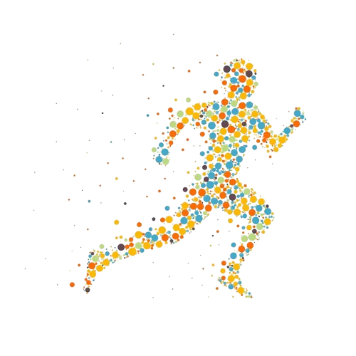

Bienvenue sur la plateforme dédiée à la gestion des espaces sportifs de l'ENSAJ. Notre objectif est de vous offrir une expérience sportive fluide et agréable, en vous permettant de réserver facilement des terrains, de participer à des compétitions, et de gérer votre emploi du temps sportif en toute simplicité.
Que vous souhaitiez organiser un match entre amis, réserver un terrain pour votre entraînement, ou encore vous inscrire à des compétitions sportives organisées sur le campus, notre application est conçue pour vous faciliter la vie. Nous mettons à votre disposition une interface intuitive, accessible à tous, pour gérer vos activités sportives.
Notre mission est de promouvoir l'esprit sportif, la convivialité, et de vous offrir des moments inoubliables. Grâce à notre plateforme, vous pouvez réserver vos créneaux, suivre les compétitions à venir, et rejoindre des équipes ou événements qui correspondent à vos centres d'intérêt.
Réservation facile des terrains
Participation à des compétitions
Suivi des événements sportifs